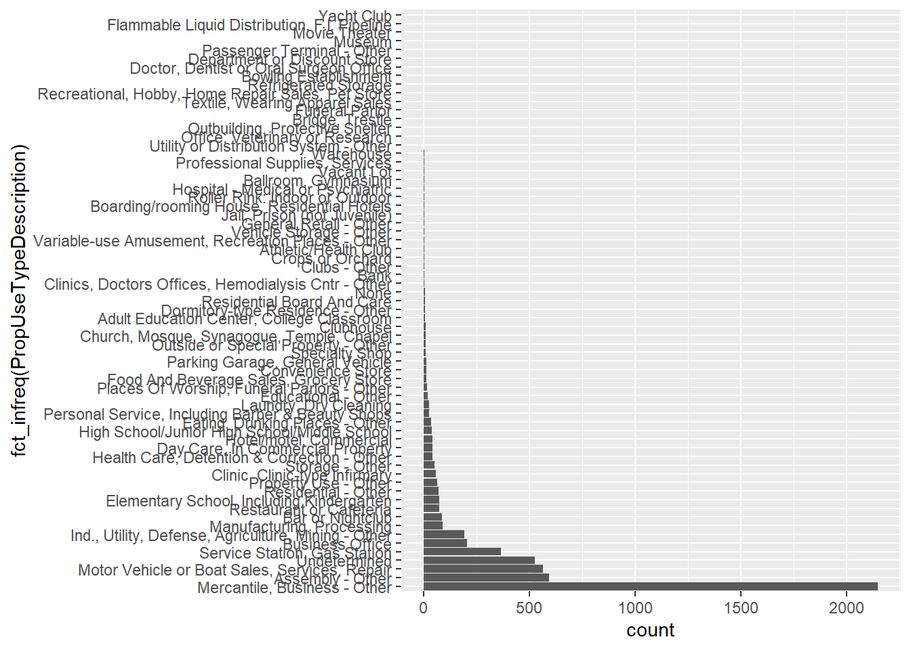

Attaching package: 'dplyr'The following objects are masked from 'package:stats':
filter, lagThe following objects are masked from 'package:base':
intersect, setdiff, setequal, union
Attaching package: 'dplyr'The following objects are masked from 'package:stats':
filter, lagThe following objects are masked from 'package:base':
intersect, setdiff, setequal, unionhead(inspections, 10)# A tibble: 10 × 12
IO_ID Address Occup…¹ Struc…² PropU…³ PropU…⁴ Inspe…⁵ LatestInspDate
<chr> <chr> <chr> <chr> <chr> <chr> <chr> <dttm>
1 161973 119 Garfi… Sugar … <NA> 400 Reside… ANNUAL… 2022-09-14 17:46:00
2 161957 1555 Mack Pepsi-… <NA> 700 Manufa… ANNUAL… 2022-09-14 17:11:00
3 161961 13775 Bue… 13775 … <NA> 500 Mercan… ANNUAL… 2022-09-14 13:20:00
4 161974 18695 She… ALRO S… Alro S… 700 Manufa… ANNUAL… 2022-09-14 03:50:00
5 161924 18700 Mey… Home D… Home D… 500 Mercan… ANNUAL… 2022-09-13 17:37:00
6 161935 2131 Beau… GLEANE… <NA> 599 Busine… ANNUAL… 2022-09-13 16:00:00
7 161936 3579 Grat… Faygo … Faygo … 700 Manufa… ANNUAL… 2022-09-13 13:45:00
8 161925 7515 Lynd… Detroi… Detroi… 700 Manufa… ANNUAL… 2022-09-13 12:31:00
9 161929 8530 Joy Carla … Carla … 200 Educat… ANNUAL… 2022-09-13 10:00:00
10 161914 600 East … BCBSM … Tower … 882 Parkin… ANNUAL… 2022-09-12 15:15:00
# … with 4 more variables: InspWithinLastYear <chr>, address_id <chr>,
# lon <dbl>, lat <dbl>, and abbreviated variable names ¹OccupantName,
# ²StructureName, ³PropUseType, ⁴PropUseTypeDescription, ⁵InspectionType_Full
# ℹ Use `colnames()` to see all variable namesNull Value prevalence
inspect_na(inspections) %>% show_plot()
# inspection, prop use types to factors
inspections$InspectionType_Full <- as_factor(inspections$InspectionType_Full)
inspections$PropUseType <- as_factor(inspections$PropUseType)
inspections$PropUseTypeDescription <- as_factor(inspections$PropUseTypeDescription)
inspections$InspWithinLastYear <- as_factor(inspections$InspWithinLastYear)Data types
inspect_types(inspections) %>% show_plot()# Remove 'ANNUAL ' from InspectionType_Full text strings for chart and plot
tmp_inspections <- inspections
tmp_inspections$InspectionType_Full <- str_sub(tmp_inspections$InspectionType_Full, 8, -1)
tmp_inspections %>% count(InspectionType_Full, sort=TRUE)# A tibble: 23 × 2
InspectionType_Full n
<chr> <int>
1 Business Occupancy 1727
2 Mercantile Occupancy 1334
3 Assembly Occupancy 783
4 Repair Garage 520
5 Gas Station 321
6 Industrial Occupancy 242
7 Educational 127
8 Residential 119
9 High Rise 108
10 302 Site 72
# … with 13 more rows
# ℹ Use `print(n = ...)` to see more rowsggplot(tmp_inspections, aes(x = fct_infreq(InspectionType_Full))) +
geom_bar() + labs(x="Annual Inspection Type", y="Count") + coord_flip()
inspections %>% count(PropUseType, sort=TRUE)# A tibble: 67 × 2
PropUseType n
<fct> <int>
1 500 2148
2 100 592
3 579 565
4 UUU 524
5 571 364
6 599 205
7 600 191
8 700 89
9 162 87
10 161 75
# … with 57 more rows
# ℹ Use `print(n = ...)` to see more rowsggplot(inspections, aes(x = fct_infreq(PropUseTypeDescription))) +
geom_bar() + coord_flip()
inspections %>% count(PropUseTypeDescription, sort=TRUE)# A tibble: 67 × 2
PropUseTypeDescription n
<fct> <int>
1 Mercantile, Business - Other 2148
2 Assembly - Other 592
3 Motor Vehicle or Boat Sales, Services, Repair 565
4 Undetermined 524
5 Service Station, Gas Station 364
6 Business Office 205
7 Ind., Utility, Defense, Agriculture, Mining - Other 191
8 Manufacturing, Processing 89
9 Bar or Nightclub 87
10 Restaurant or Cafeteria 75
# … with 57 more rows
# ℹ Use `print(n = ...)` to see more rowsinspections %>% count(InspWithinLastYear, sort=TRUE)# A tibble: 2 × 2
InspWithinLastYear n
<fct> <int>
1 Yes 3796
2 No 1803ggplot(inspections, aes(x = fct_infreq(InspWithinLastYear))) +
geom_bar()# Need to bin by month or year - this is unbinned
# inspections %>% select(LatestInspDate)
# ggplot(inspections, aes(x=LatestInspDate)) + stat_count(geom='point')inspect_imb(inspections) %>% show_plot()inspect_cat(inspections)# A tibble: 9 × 5
col_name cnt common common_pcnt levels
<chr> <int> <chr> <dbl> <named >
1 Address 5593 1249 Washington Boulevard 0.0357 <tibble>
2 address_id 5213 <NA> 6.57 <tibble>
3 InspectionType_Full 23 ANNUAL Business Occupancy 30.8 <tibble>
4 InspWithinLastYear 2 Yes 67.8 <tibble>
5 IO_ID 5599 100051 0.0179 <tibble>
6 OccupantName 5266 Metro PCS 0.697 <tibble>
7 PropUseType 67 500 38.4 <tibble>
8 PropUseTypeDescription 67 Mercantile, Business - Other 38.4 <tibble>
9 StructureName 3153 <NA> 34.7 <tibble>inspections %>% distinct(PropUseType, PropUseTypeDescription) #%>% select(PropUseType, PropUseTypeDescription)# A tibble: 67 × 2
PropUseType PropUseTypeDescription
<fct> <fct>
1 400 Residential - Other
2 700 Manufacturing, Processing
3 500 Mercantile, Business - Other
4 599 Business Office
5 200 Educational - Other
6 882 Parking Garage, General Vehicle
7 571 Service Station, Gas Station
8 600 Ind., Utility, Defense, Agriculture, Mining - Other
9 100 Assembly - Other
10 254 Day Care, In Commercial Property
# … with 57 more rows
# ℹ Use `print(n = ...)` to see more rowsinspections %>% arrange(PropUseType) %>% distinct(PropUseTypeDescription) %>% arrange(.by_group = TRUE)# A tibble: 67 × 1
PropUseTypeDescription
<fct>
1 Residential - Other
2 Manufacturing, Processing
3 Mercantile, Business - Other
4 Business Office
5 Educational - Other
6 Parking Garage, General Vehicle
7 Service Station, Gas Station
8 Ind., Utility, Defense, Agriculture, Mining - Other
9 Assembly - Other
10 Day Care, In Commercial Property
# … with 57 more rows
# ℹ Use `print(n = ...)` to see more rows